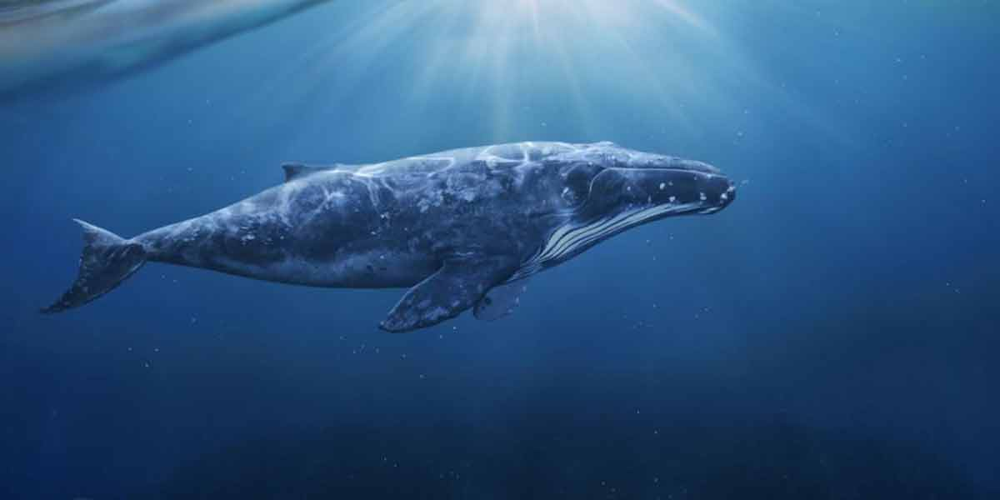
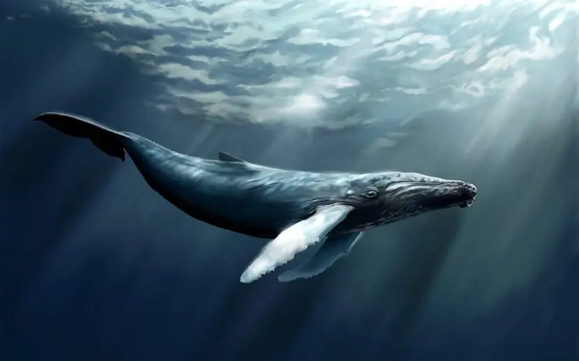
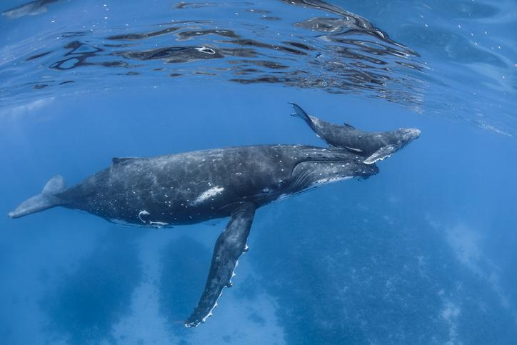

Los balénidos (Balaenidae) son una familia de cetáceos misticetos que incluye cuatro especies, distribuidas en dos géneros, Balaena y Eubalaena. Sin embargo el término ballena es usado en sentido amplio para referirse a todos los grandes cetáceos incluidos en el parvorden Mysticeti (cetáceos con barbas) como el rorcual azul (Balaenoptera musculus) y a varias especies del parvorden Odontoceti (cetáceos dentados), por ejemplo el cachalote (Physeter macrocephalus)
| especies | caracteristicas | habitas |
|---|
|    |